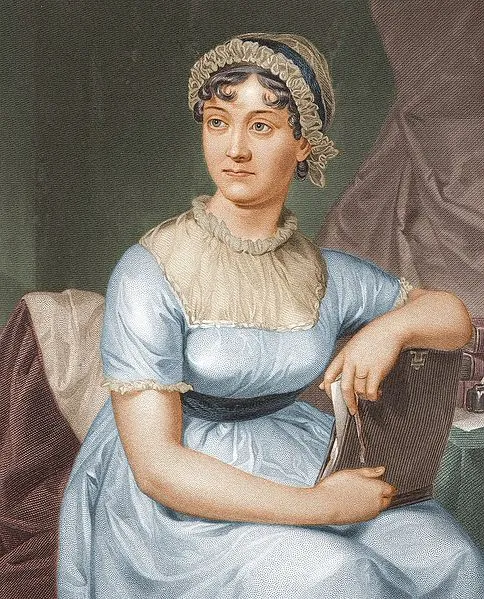

Autora de Orgulho e Preconceito e outras importantes obras da literatura inglesa, celebramos no ano passado 250 anos do seu natalício.
Página oficial do centro de memória da autora: Jane Austen Center

É uma verdade universalmente conhecida que um homem solteiro possuidor de uma boa fortuna deve estar necessitado de uma esposa.
Os 250 anos de Jane Austen: como a escritora britânica decifrou o mercado do
casamento em seus livros
Embora a autora tenha permanecido solteira ao longo da vida, Austen usou seu
aguçado poder de observação para transpor a seus romances a realidade não dita
sobre os casamentos da elite inglesa no século 19.
Neste 16 de dezembro, mas em 1775, nascia uma das mais famosas e respeitadas escritoras: a britânica Jane Austen. A autora soube retratar com graça e precisão os meandros da elite e nobreza do Reino Unido do final do século 18 e início do 19. Sua história de vida mostra como seu olhar aguçado foi capaz de observar os romances e interesses da sociedade da época.
"Agora temos outra menina, um brinquedo atual para sua irmã Cassy e uma futura companheira. Ela se chamará Jenny, e me parece que ela será tão parecida com Henry quanto Cassy é com Neddy."
Com essas palavras, o Reverendo George Austen anunciou o nascimento de sua filha Jane Austen, a sétima de oito crianças (seis meninos e duas meninas) nascidas de sua esposa, Cassandra Leigh.
Ninguém poderia suspeitar que essa bebê, nascida em 1775 em Steventon, uma pequena cidade da Inglaterra, se tornaria uma das mais famosas romancistas de todos os tempos. Ela morreu com apenas 41 anos em um 18 de julho e desde então descansa na Catedral de Winchester, na cidade inglesa de mesmo nome.